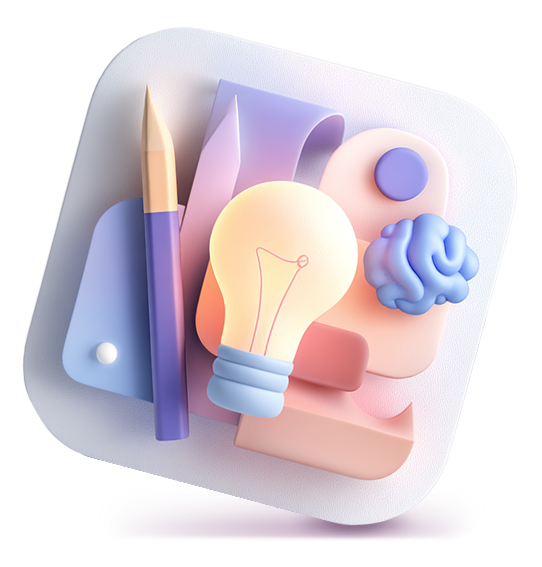
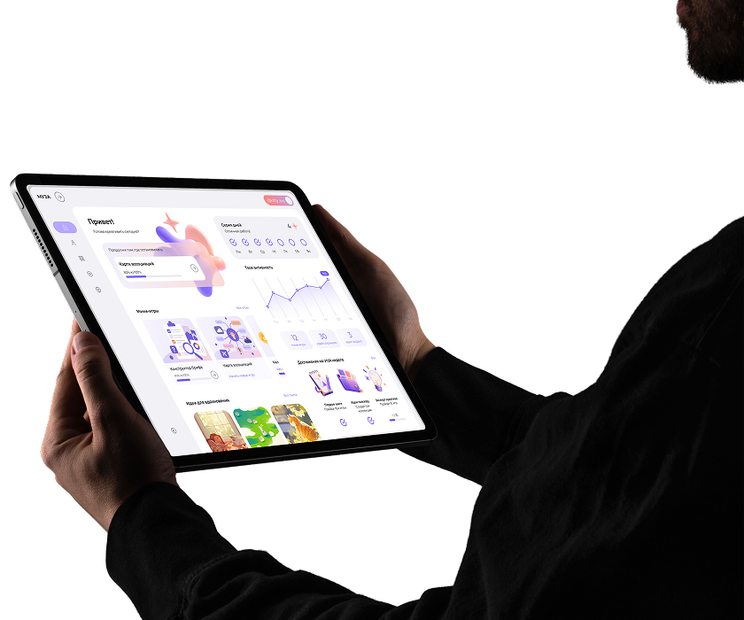
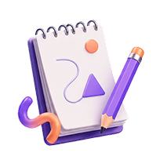
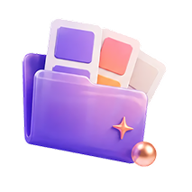
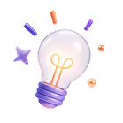
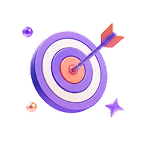

Наше приложение тренирует взгляд, который замечает больше, чем просто картинку.
Это факты и эмоции, риски и креатив. Это умение видеть систему.

Креативность — навык. Мы научим.
Приложение создано для тех, кто работает с творчеством: дизайнеров, маркетологов, иллюстраторов и всех, кто сталкивался с чувством пустоты перед чистым листом.
Вместо хаоса и случайного вдохновения — понятная экосистема — раскройте ваши сильные стороны, найдите решение проблемы легко и просто!
Муза тренирует навык замечать связи между фактами, эмоциями, рисками и креативом. Это не просто приложение. Это способ видеть систему там, где другие видят только картинку.


Пройди тест и получи персональный дизайн-профиль с сильными сторонами. Результат всегда на виду, чтобы вдохновлять.

Листай ленту визуальных референсов, собирай коллекции по темам. добавляй свои идеи, делись ими с другими пользователями.
Преодолевай творческий кризис за простой игрой — четыре инструмента с понятными правилами — каждая игра решает свою творческую задачу.
Прежде чем искать идеи снаружи, загляните внутрь.
Наш тест определяет ваш тип творческого человека — например, гармоничный созерцатель, аналитический стратег или эмоциональный рассказчик.
Ты перестанешь действовать наугад.
Зная свои сильные стороны, ты будешь выбирать инструменты и подходы, которые работают именно для тебя.

Результаты сохранятся в разделе «Мой профиль» и всегда будут на виду.
Это важное напоминание: у тебя есть суперсила, которую надо использовать.
